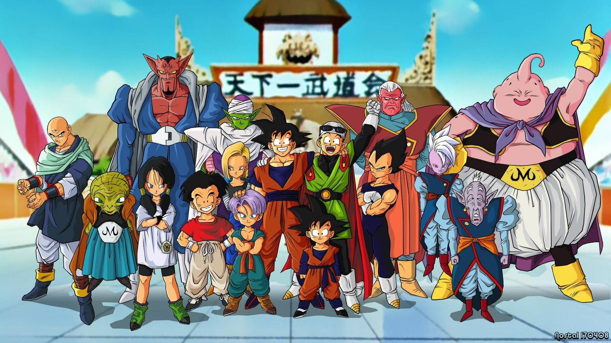
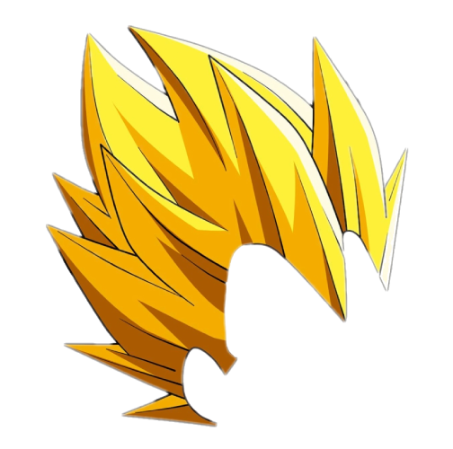
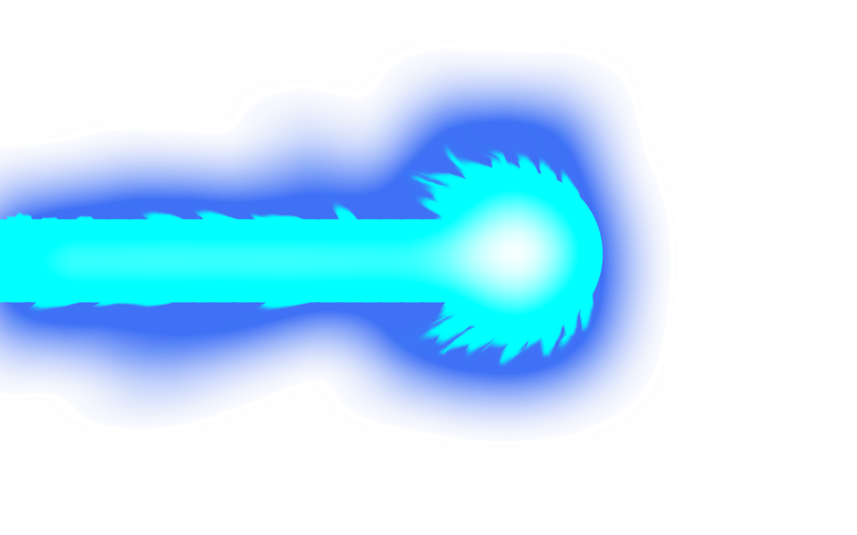
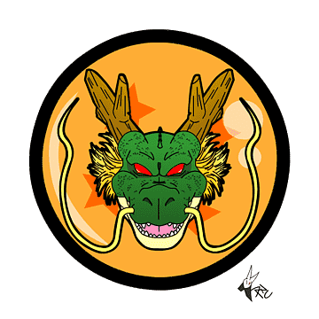
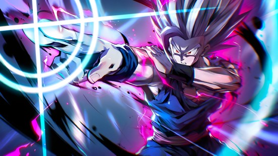

El universo visual mantiene negro, naranja y dorado como base
La composicion reutiliza la energia grafica del sitio: fondos oscuros, brillos calidos, tipografias potentes y contraste alto.
Un espacio visual para destacar detalles memorables del universo Dragon Ball sin romper la identidad del proyecto.
Ver curiosidadesLa composicion reutiliza la energia grafica del sitio: fondos oscuros, brillos calidos, tipografias potentes y contraste alto.

Las tarjetas conservan los textos ya presentes en la pagina principal y los presentan con una jerarquia visual mas solida.

El cabello Saiyajin nunca crece una vez que alcanzan la adultez.

El Kamehameha fue inspirado por una tecnica de yoga.

Shenlong solo puede revivir a alguien una vez con las esferas de la Tierra.
La pagina esta disenada para sentirse parte del mismo universo visual de inicio, historia y personajes, pero con una lectura mas limpia y bloques mas modulares.

Tarjetas con borde luminoso y relieve suave para reforzar el estilo del proyecto.
Distribucion adaptable para escritorio, tablet y movil sin alterar el contenido base.
Interacciones sutiles para mejorar percepcion visual sin cambiar la informacion mostrada.